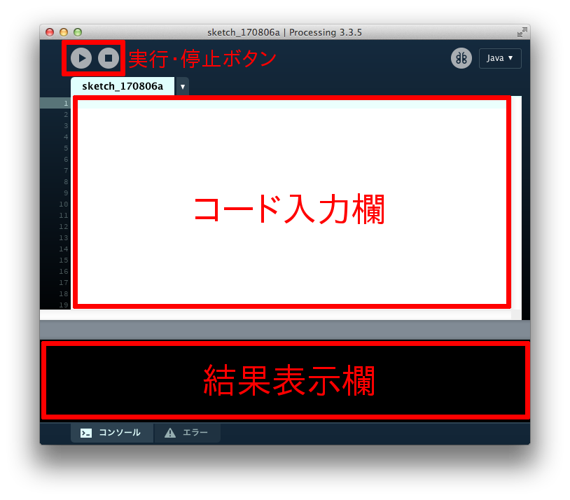

はじめに
機室体験について
もしiMacが起動されていなかったり、誤ってシャットダウンしてしまった場合、係員までお知らせください。
情報科学類のiMacのマウスには、右クリックと左クリックを分ける境目がありませんが、マウス天面の右範囲を押せば右クリック、左範囲を押せば左クリックになります。
また、真ん中にある丸い部分をグリグリと動かすと画面をスクロールすることができます。このマウスでは縦スクロールだけではなく、横スクロールも可能です。
この体験では Processing というソフトウェアを用います。
まず、カーソルを画面の下端に動かし、下の図のようにアプリが並ぶバー(Dockと呼ばれます)を出してください。

続いて、右から2番目のアイコン(カーソルを乗せると「アプリケーション」と表示されるもの)をクリックします。

アプリの一覧が表示されるので、「Processing」という名前のアプリを探してクリックしてください。
下の図のような画面が表示されれば起動成功です。

必要最低限の機能は下の図の通りです。係員からも説明がありますが、困ったら何でも気軽に質問してください。 